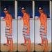
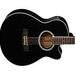

Anderson Freire
Raridade
197.116 exibições
Tom: D
Intro: G5 D/F# Em D9 G5 D/F# Em
D9 A9 Bm7
Não consigo ir além do teu olhar
A9 G5
Tudo o que eu consigo é imaginar
D/F# Em A9
A riqueza que existe dentro de você
D9 A9 Bm7
O ouro eu consigo só admirar
A9 G5
Mas te olhando eu posso a Deus adorar
D/F# Em A9 B
Sua alma é um bem que nunca envelhecerá
Bm7 G5
O pecado não consegue esconder
D9 A9 Bm7
A marca de Jesus que existe em você
G5 D9
O que você fez ou deixou de fazer
A9 Em
Não mudou o inicio Deus escolheu você
D/F# G5 Bm7
Sua raridade não está naquilo que você possui
Em D/F# G5
Ou que sabe fazer isso é mistério de Deus com você
D9 A9 Bm7
Você é um espelho que reflete a imagem do Senhor
A9 G5
Não chore se o mundo ainda não notou
D/F# Em A9
Já é o bastante Deus reconhecer o seu valor
D9 A9 Bm7
Você é precioso mais raro que o ouro puro de Ofir
A9 G5
Se você desistiu Deus não vai desistir
D/F# Em
Ele está aqui pra te levantar
A9 Bm7
Se o mundo te fizer cair
O ouro eu consigo...
E G C#m
Você é um espelho que reflete a imagem do Senhor
A
Não chore se o mundo ainda não notou
G# F#m Bm
Já é o bastante Deus reconhecer o seu valor
E Bm D
Você é precioso mais raro que o ouro puro de Ofir
Bm A
Se você desistiu Deus não vai desistir
G# F#m
Ele está aqui pra te levantar
Bm ( F#m você é um espelho...)
Se o mundo te fizer cair
Final: A E/G# F#m7 Em A E/G# F#m7 B4 B EComposição: Anderson FreireColaboração e revisão:
- 
- +18
Comentários 17
- Pudim: Em 23/09/2014 11:01
Nenhuma das cifras correspondem à música que o Fofão toca na vídeo aula?
Como assim?? - radameeses: Em 21/07/2014 21:36
um tom bom para sopranoé d
- Anderson: Em 14/05/2014 17:21
massa!
- lucasnascimento.guitarrista: Em 04/05/2014 11:10
perfeito facil pra tocar
- Jessica: Em 22/03/2014 17:41
capotraste na 3a casa em tom de G, perfeito e facil e tocar.
- Jenny: Em 31/01/2014 16:36
ADOROO SS22
- Fabiano Orquiz: Em 17/09/2013 20:45
Olá pessoal se alguem tiver a tablatura do solo posta ai, valeu
- tersa: Em 10/09/2013 10:53
Lindo louvor, profundo!
- Sara: Em 02/08/2013 17:40
Eu sou soprano, vocês sabem o tom indicado pra mim ?
- Jo0liveiira09: Em 28/11/2013 16:07
Comentário removido
- Jo0liveiira09: Em 28/11/2013 16:07
conseguiu tocar?
- 
- •••
covers
envie o seuThiago Pachêco8.385 visualizações
ver covers de outras músicas »Capítulos
- Tocando a música
- Acordes da Introdução
- Tocando Introdução
- Ensinando Introdução
- Acordes da Primeira e Segunda Partes
- Tocando Primeira e Segunda Partes
- Ensinando Variação de Ritmo
- Dicas do Refrão
- Tocando Refrão
- Acordes da Base do Solo
- Tocando Base do Solo
- Acordes do Refrão (Sobe 1 tom)
- Tocando Refrão (Sobe 1 tom)
- Dicas Finais
- Tocando Final
- Encerramento
- Ficha técnica / Erros de gravação
7 versões de violão
dificuldade
exibições contribuição e correção
7 versões de guitarra
dificuldade
exibições contribuição e correção
7 versões de cavaco
dificuldade
exibições contribuição e correção
7 versões de teclado
dificuldade
exibições contribuição e correção
3 versões de Guitar Proformatodownloadscontribuição
4 versões de partiturasformatodownloadscontribuição
play/pausefechar
subir/descer
velocidade
- 1
- 2
- 3
- 4
- 5
- 6
- 7
- 8
- 9
- 10
- 11
- 12
publicidade